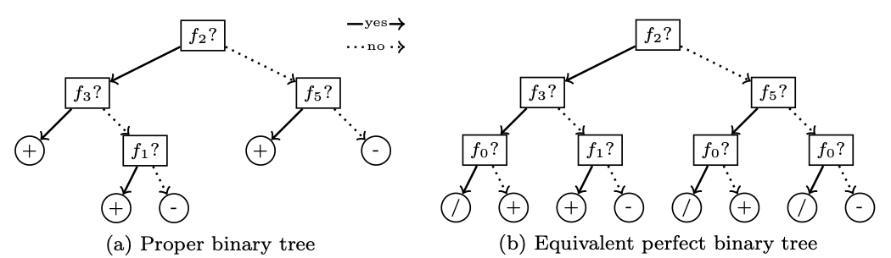
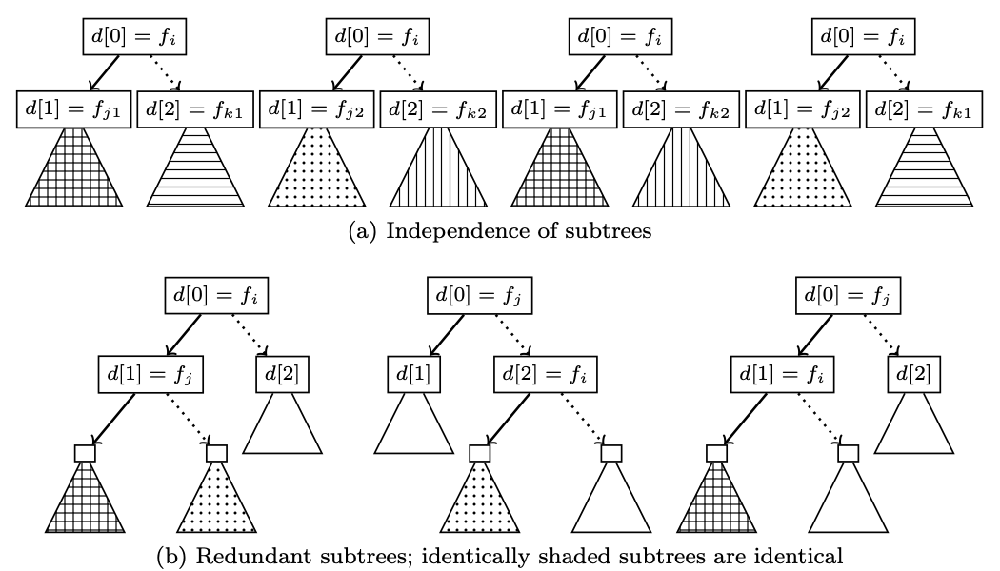
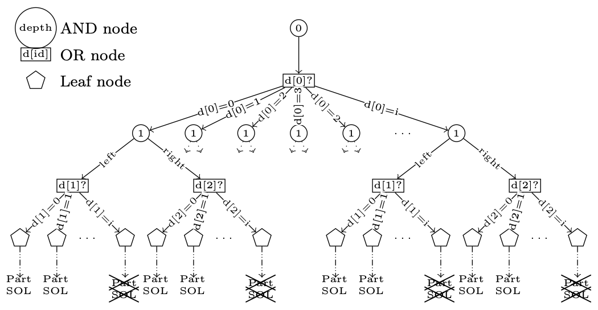

- 最適性の証明 68 / 80 問葉の最小データ数 \(N_{\min} = 1\)、制限時間 10 分。同じ条件で DL8 は 49 問、BinOCT は 13 問だった。\(N_{\min} = 5\) では 65 問で、DL8 は 54 問。
- 最良の解 80 / 80 問\(N_{\min} = 1\) で比べた 3 手法のうち、最も誤分類の少ない木を全問で見つけた（同点を含む）。DL8 は 49 問、BinOCT は 21 問。
- キャッシュで 70% 短縮tic-tac-toe、深さ 5 での計算時間の短縮（\(N_{\min} = 5\)）。上界による刈り込みは hypothyroid の深さ 4 で計算時間を 2.4 分の 1 にした。
深さを決めて誤分類を最小にする最適な木は NP 困難で、既存の厳密解法は MIP や SAT、アイテム集合マイニングの上に作られてきた
CART や C4.5 のような貪欲法は、分岐に使う特徴量を 1 つずつ選んでデータを分けていく。多くのデータで精度の高い木ができるが、保証はほとんどない。木が必要以上に大きくなることも、もっと正確な木があることもあり、公平性のような制約を後から加えるのも難しい。そこで、決めた制約と目的のもとで最適な木を求める研究が増えてきた。
よく扱われるのは、二値のデータで木の深さに上限を置き、訓練データでの精度を最大にする問題である。深さを制限すると木が読みやすくなり、過学習も抑えられる。ただし最適な木を求める問題は NP 困難なので、何らかの網羅的な探索が要る。これまでの手法は既存の道具を使ってきた。BinOCT などは混合整数計画（MIP）のソルバー、Narodytska らは SAT ソルバー、DL8 はアイテム集合マイニングのアルゴリズムを使う。論文はこの問題に、制約プログラミング（CP）による、よりスケールする方法を提案する。
CP で決定木を扱った研究には Bessiere ら（2009）などがあるが、それらは訓練データを誤りなく分ける最小の木を求めていた。ノイズのあるデータでは誤りゼロの木がそもそもないこともあるので、機械学習ではあまり使われない設定である。論文によれば、精度を最適にする設定で CP を使うのはこれが初めてである。
二値の特徴量だけのデータで、深さの上限と葉ごとの最小データ数のもとで、誤分類の数を最小にする木を求める
データは \(n \times m\) の 0/1 行列 \(D\) で、行 \(D_t\) がデータ（アイテム集合マイニングの用語でトランザクション）、列が特徴量（アイテム）である。クラスは 0 と 1 の 2 つで、ベクトル \(v\) に入っている。連続値の特徴量は CART と同じように前もってしきい値で二値化しておく。木の内部ノード \(w\) は特徴量 \(d[w]\) を 1 つ持ち、その値が 1 なら左、0 なら右へ進む。葉 \(w\) は予測するクラス \(b[w]\) を持つ。木の深さを、根から葉までの経路に現れる特徴量の数の最大値と定める。上限の深さを与え、根を \(r\)、木の予測を \(F(r, t)\) として、次を最小にする。
これに加えて、各葉に届くデータの数を \(N_{\min}\) 以上にする制約を置ける。論文は 2 クラスに絞って説明しているが、多クラスへの拡張は比較的やさしいと述べている。
葉に届くデータの数は、アイテム集合の被覆を数える大域制約 CoverSize を「その特徴を持たない」側にも広げた CoverSizeSR で数える
木の誤分類を数えるには、各データがどの葉に届くかを知る必要がある。根から葉までの経路は「この特徴は 1、あの特徴は 0」という条件の並びで、条件をすべて満たすデータがその葉に届く。これはアイテム集合マイニングで、あるアイテム集合を含むトランザクションを数えること（被覆）に対応する。CP には、選んだアイテム集合の被覆の大きさを変数に結びつける大域制約 CoverSize がすでにある。ただし CoverSize は「その特徴を持つ」という条件しか扱えない。決定木では右の枝へ進む条件、つまり「その特徴を持たない」も必要になる。そこで論文は持つべき特徴の集合（take）と持たない特徴の集合（drop）の両方を受け取る CoverSizeSR を作った。
\(K_i\) と \(L_i\) は選ぶ特徴量の番号を値にとる整数変数である。伝播器は条件を満たすデータの集合（cover）を可逆な疎ビット集合で持ち、変数が決まるたびに、特徴ごとに前もって計算したビット集合（またはその補集合）との積をとって更新する。cover の大きさは個数 \(c\) の上界になり、残りの候補をすべて選んだと仮定した仮の cover の大きさは下界になる。さらに、選んだときに残るデータが \(c\) の下限に届かない特徴は、変数の候補から取り除く。計算量は \(w\) をワード長（たとえば 64）として \(O(mn/w)\) で、もとの CoverSize と同じである。
木を完全二分木とみなし、使わない分岐にはダミーの特徴を置くので、変数と制約の数は木のノードの数だけで決まる
モデルは決めた深さの完全二分木（すべての葉が同じ深さにある木）を前提にする。それより浅い枝を持つ木も、どのデータにも現れないダミーの特徴 \(f_0\) を分岐に置けば完全二分木に直せる（図1）。\(f_0\) で分けると、データはすべて右の枝へ進む。この前提のおかげで、変数と制約の数はデータの数にも特徴量の数にもよらず、木のノードの数だけで決まる。
- 変数：分岐ノード \(i\) の特徴 \(d[i] \in \{0, 1, \dots, m\}\)（0 がダミー）。ノードごとに、そこへ届くクラス 1 とクラス 0 のデータの数 \(c^+[i]\)、\(c^-[i]\) と、その部分木の誤分類数 \(e[i]\)。葉にはデータの総数 \(c[i] \in \{0\} \cup \{N_{\min}, \dots, |D|\}\) も置く。
- 数え上げ：葉では \(c^+[i]\) と \(c^-[i]\) を、祖先の特徴を take と drop に分けた CoverSizeSR で数える。分岐ノードでは子の個数の和をとる。
- 誤分類：葉では \(e[i] = \min\{c^+[i], c^-[i]\}\)（多いほうのクラスを予測する）、分岐ノードでは \(e[i] = e[\mathrm{left}(i)] + e[\mathrm{right}(i)]\)。目的は根の \(e\) を最小にすることである。
- 無駄な分岐を除く制約：同じ経路で同じ特徴を 2 度使わない（AllDifferentExcept0）。分岐するなら、分けた後の誤分類は分ける前の \(\min\{c^+[i], c^-[i]\}\) より真に小さくなければならない。ダミーで分けたノードの下はすべてダミーにする。
探索を速くするための冗長な制約も加える。CoverSizeSR を右の子以外のすべてのノードに置き、個数を木の上のほうで早く確定させる（右の子の個数は親と兄弟から決まる）。片方のクラスのデータが \(N_{\min}\) 未満しか届かないノードや、データが \(2N_{\min}\) 未満しか届かないノードでは分岐しない、といった制約もある。

左右の部分木は独立に最適化できるので AND/OR 探索で別々に解き、同じ条件の部分木はキャッシュで使い回し、上界で枝を刈る
ある分岐ノードとその祖先の特徴が決まると、左の部分木と右の部分木の最適化は互いに独立になる。目的の誤分類数は葉ごとの値の和なので、左の最適な部分木と右の最適な部分木を別々に求めて組み合わせれば、そのノードより下の最適な木になる（図2上）。ふつうの CP の探索は変数を 1 つずつ決めるので、左の選び方と右の選び方の組合せをすべてたどってしまう。論文は各ノードの特徴を順に試す OR ノードと、左右の子を順に解いて組み合わせる AND ノードからなる AND/OR 探索を使う（図3）。特徴を試す順番は情報利得の大きい順に探索の最初に一度だけ決める。
部分木の重複も多い。「\(f_i\) が 1 で \(f_j\) が 1」の経路と「\(f_j\) が 1 で \(f_i\) が 1」の経路には同じデータが届くので、その下の最適な部分木も同じである（図2下）。そこで DL8 と同じように、経路の take と drop の集合からハッシュを作り、最適な部分木とその誤分類数を保存しておく。OR ノードはまず保存した結果を調べ、あればそれを返す。
さらに上界による刈り込みを加える。OR ノードでは、それまでに見つけた最良の誤分類数を上界にして、部分木の誤分類 \(e\) がそれ未満になるように制約する。AND ノードでは、左の子の最良の誤分類数が上界を超えたら右の子は解かない。超えなければ、上界から左の値を引いた残りを右の子の上界にする。実装は CP ソルバーの OscaR の上に作られている。OscaR は AND/OR 探索を備えていないので、状態の保存と復元（trail）を使って書いた。


24 のデータと深さ 2〜5 の 80 問で、CP の方法は 10 分以内に 68 問の最適性を証明し、全問で最良の解を見つけた
比べたのは 2 つの厳密解法で、CPLEX 上の MIP である BinOCT と、動的計画法の DL8 である。BinOCT は時間切れになるとそれまでの最良の解を返すが、\(N_{\min}\) を指定できない。DL8 は途中の解を出さない。データは CP4IM と UCI の 24 個（データ数 101〜20,000、二値化した特徴量 27〜445）で、深さを 2〜5 から選んで 80 問とし、制限時間は 10 分とした。木の訓練データでの最適性が高いほどテストでも精度が高いことは先行研究で示されているとして、論文は計算時間だけを比べている。
\(N_{\min} = 1\) では、CP の方法は 68 問（85%）で最適性を証明し、80 問すべてで 3 手法の中の最良の解（同点を含む）を見つけた。時間切れは 12 問だった。DL8 は証明 49 問・時間切れ 31 問、BinOCT は証明 13 問・時間切れ 67 問である。\(N_{\min} = 5\) でも CP の方法は 65 問（81%）を証明し、DL8 の 54 問を上回った。ただし hepatitis、lymph、primary-tumor のような小さなデータでは DL8 のほうが速い。論文は BinOCT との大きな差を AND/OR 探索の効果と説明し、DL8 との差の一部は上界による刈り込みと、CoverSize が持つアイテム集合マイニングの工夫によるものだろうと述べている。
キャッシュを外した版（CP-c）と、上界による刈り込みを外した版（CP-m）とも比べた。キャッシュが役に立つのは深さ 4 以上で、tic-tac-toe の深さ 5 では計算時間が 70% 短くなった（282 秒から 83 秒）。刈り込みは mushroom、hypothyroid、ionosphere、vehicle などで効果が大きく、hypothyroid の深さ 4 では計算時間が 2.4 分の 1 になった（570 秒から 236 秒）。
DL8 のキャッシュとアイテム集合の見方を CP に持ち込み、CP の柔軟さを残したまま速さで MIP と DL8 を上回った
- 何を最適にするか：深さの上限のもとで訓練データの誤分類数を最小にする（葉の最小データ数の制約つき）。Bessiere らや Narodytska らの、誤りなく分ける最小の木を求める設定とは違い、OCT や BinOCT と同じ設定である。
- DL8 から受け継いだもの：経路をアイテム集合とみなす見方と、それをキーにしたキャッシュ。一方、DL8 が深さの代わりに最小サポートで探索を絞るのに対し、この論文は深さの上限を置き、上界による刈り込みを加えた。
- CP であることの利点：モデルの大きさがデータの数によらず、制約を足しやすい。論文は、多クラスへの拡張（クラスごとに個数と CoverSizeSR を足す）は簡単で、ほかの制約や、葉ごとの値の和で書ける別の目的関数を加えることにも関心があると述べる。ただしこの論文の実験は 2 クラスの誤分類数の最小化だけで、追加の制約は試していない。
（解説者の注）同じ UCLouvain のグループからは、DL8 のキャッシュつき探索に分枝限定法の上下界を加えた DL8.5（Aglin、Nijssen、Schaus、AAAI 2020）も同じ年に出ている。この論文の著者稿は DL8.5 に触れていない。
@article{verhaeghe2020learning,
title = {Learning optimal decision trees using constraint programming},
author = {Verhaeghe, H{\'e}l{\`e}ne and Nijssen, Siegfried and Pesant, Gilles and Quimper, Claude-Guy and Schaus, Pierre},
journal = {Constraints},
volume = {25},
number = {3-4},
pages = {226--250},
year = {2020},
doi = {10.1007/s10601-020-09312-3}
}
ページの内容と数値は、Pierre Schaus のページで公開されている著者稿（投稿時の原稿の体裁）による。Springer の出版版の本文は確認していない（自動取得が拒否されたため）。書誌情報は Crossref による。所属は著者稿の表記。